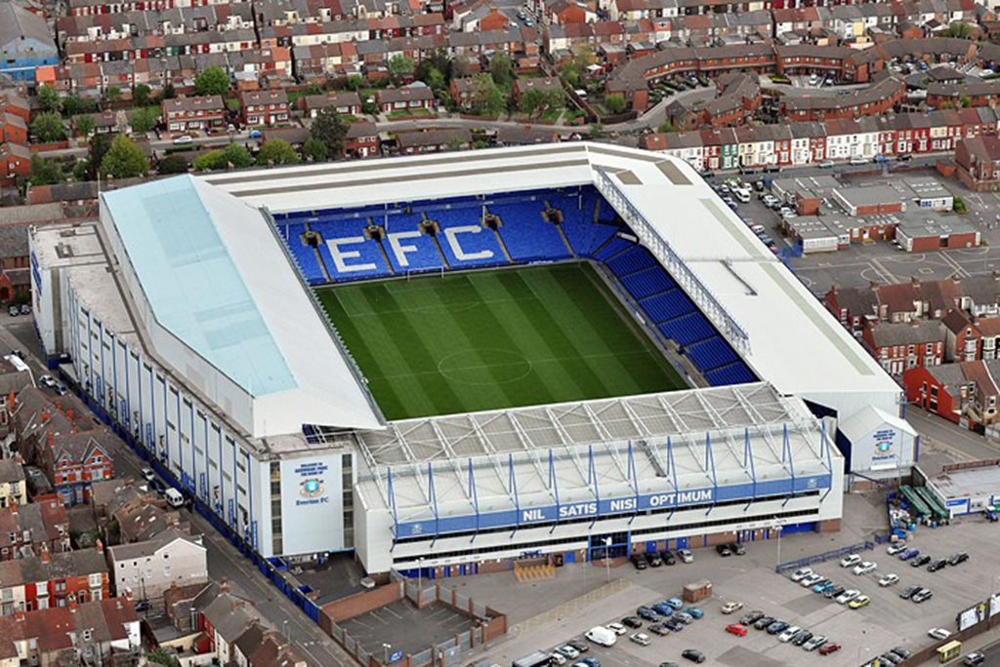

Klub története
Az Evertont 1878-ban alapították St Domingo FC néven a St Domingo Metodista Templom csapataként, hogy legyen valami elfoglaltságuk, amikor a krikett szünetel. A klubot egy év múlva Everton FC-re nevezték át Liverpool egyik városrésze után, mivel már olyanoknak is egyre szimpatikusabb lett, akik nem tartoztak a templom közösségéhez. 1888-ban alapító tagjai lettek az Angol Labdarúgó Ligának és az 1890/91-es szezonban megnyerték első bajnoki címüket. 1909-ben az FA-kupát is megnyerték, majd az 1914/15-ös idényben ismét elsőként zárták a pontvadászatot. 1925-ben a csapathoz került Dixie Dean, aki az 1927/28-as szezonban 60 gólt lőtt, ami máig érvényes rekord.
Klub színek
A klub történetének első évtizedeiben különböző színösszeállítású szereléseket használt. A legelső mez kék-fehér csíkos volt, de a más csapatoktól érkező játékosok régi mezeiket viselték. Hamar felmerült az igény az egységesítésre, ezért teljesen fekete szerelésre váltottak, abban a reményben, hogy így olcsóbb lesz a mezkészíttetés és talán komolyabbnak is fog kinézni, mint a kék-fehér. Meglehetősen morbid benyomást keltett azonban, így egy átlós piros csík került a mezre. Az Everton 1892-ben költözött be a Goodison Parkba, ez színváltással is járt, ekkor úgynevezett lazacszínű mezük volt kék rövidnadrággal, kék díszítésű rubinvörös mezre váltottak sötétkék sorttal. A híres királykék mez fehér nadrággal az 1901/02-es szezonban került először használatba. A Toffeek ma is királykék mezt használnak fehér sorttal és sportszárral. A 2007/08-as idényben idegenbeli összeállításuk fehér mezből, fekete nadrágból és sportszárból állt.
Stadion
Az Everton eredetileg a Stanley Park délkeleti részén játszott, ahol a Liverpool új stadionja fog felépülni 2011-re. Az első hivatalos meccset 1879-ben játszották itt. 1882-ben egy J. Cruitt nevű személy a klubnak adományozott egy földterületet a Priory Roadon, ahonnan később átköltöztek az Anfieldre, ami 1892-ig szolgált az otthonukként. A bérleti díjról szóló viták miatt a Kékeknek távozniuk kellett innen. Ekkor alakult meg a Liverpool és azóta ők használják az Anfieldet. Az Everton a Goodison Parkba költözött, ahol azóta is játszik.
Sikerlista
- 9-szeres angol bajnok
- 5-szörös FA kupa győztes
- 9-szeres angol szuperkupa győztes
- 1-szeres Kupagyőztesek Európa-kupája
- 3-szoros Ifjúsági Kupa